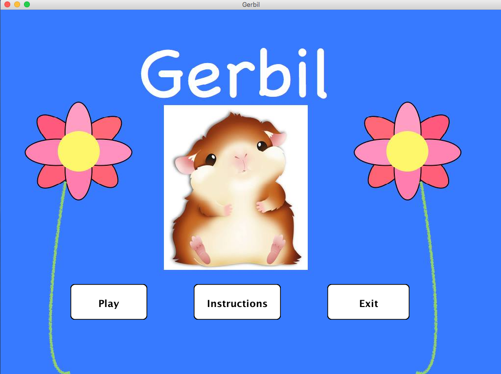
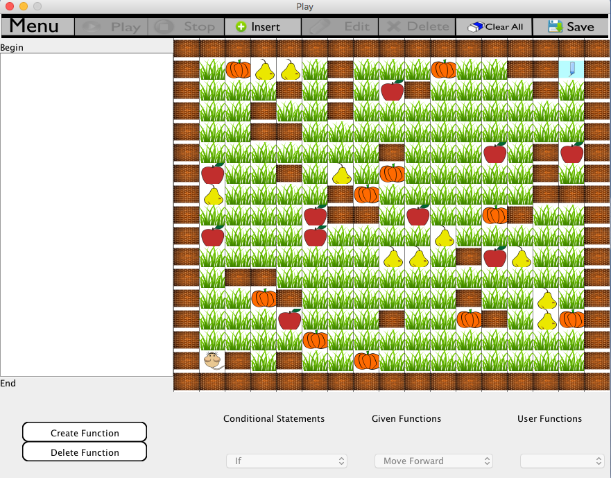
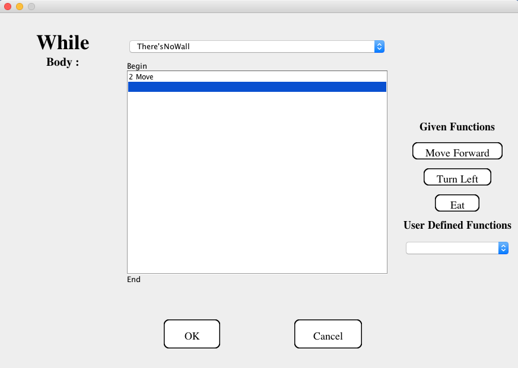
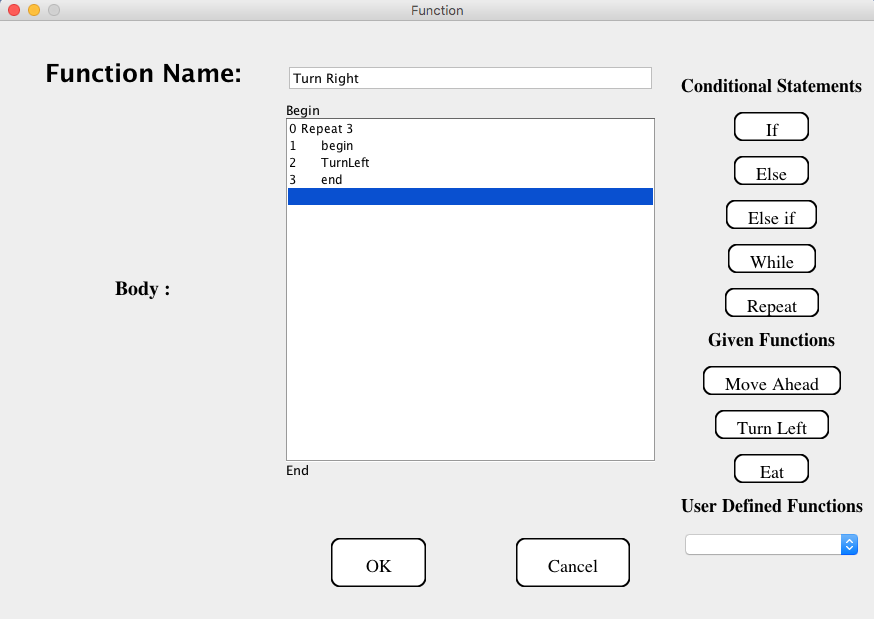
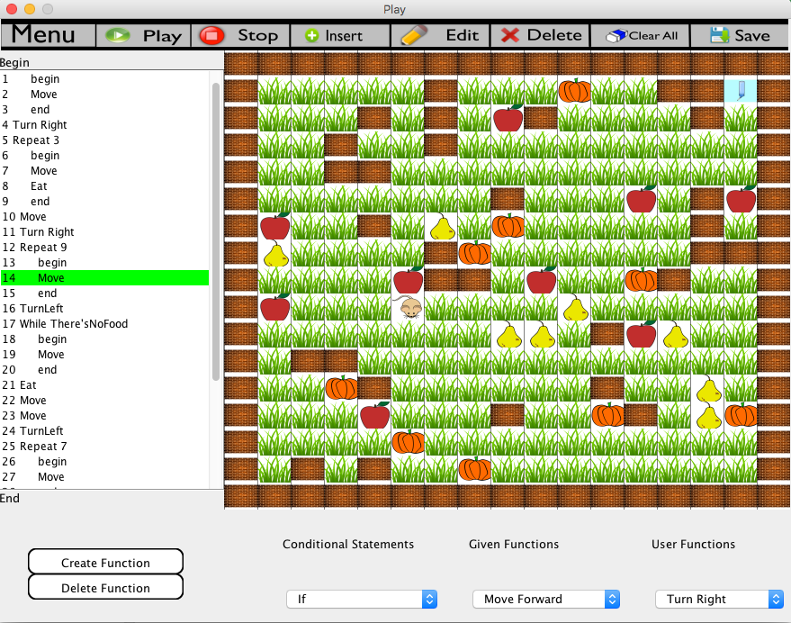
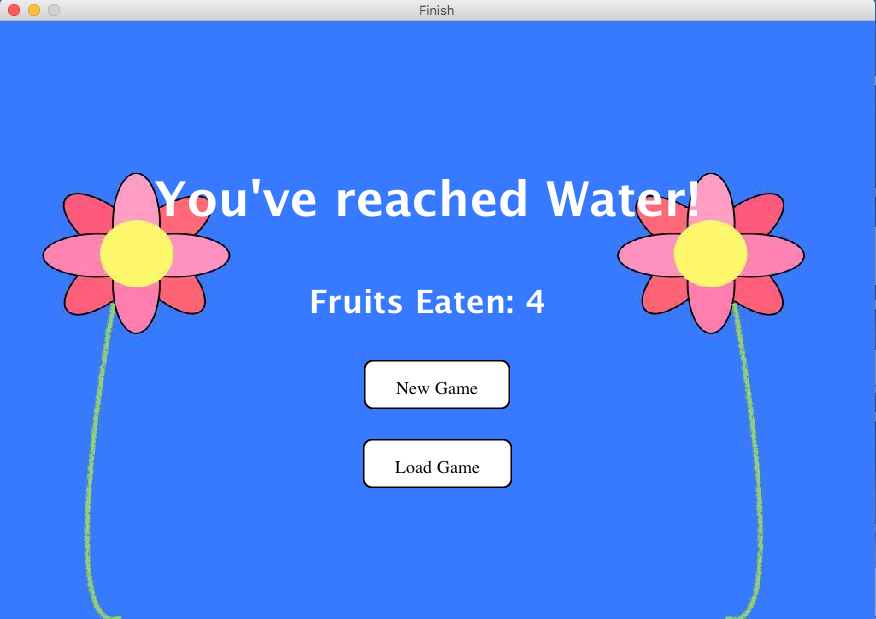

Hello!
I'm Leslie. I studied Computer Science at Rutgers University with a concentration in Software Engineering. Aside from coding, I also like to make music and experiment with sounds.
Gerbil is a Java GUI-based IDE environment aimed at teaching children in upper elementary or middle school how to program in a fun and visual manner.

The goal is to move an avatar through a randomized, solvable maze by inserting and deleting blocks of code.

Users can add conditionals to their code.

Along with given functions/actions, users are encouraged to also create their own.

Watch the gerbil come to life as the corresponding line of code is highlighted with each movement.

To complete each game, the gerbil must reach its final destination (water bottle) while eating as many fruits as possible.

Contact me at:
tianqi.xiong@gmail.com